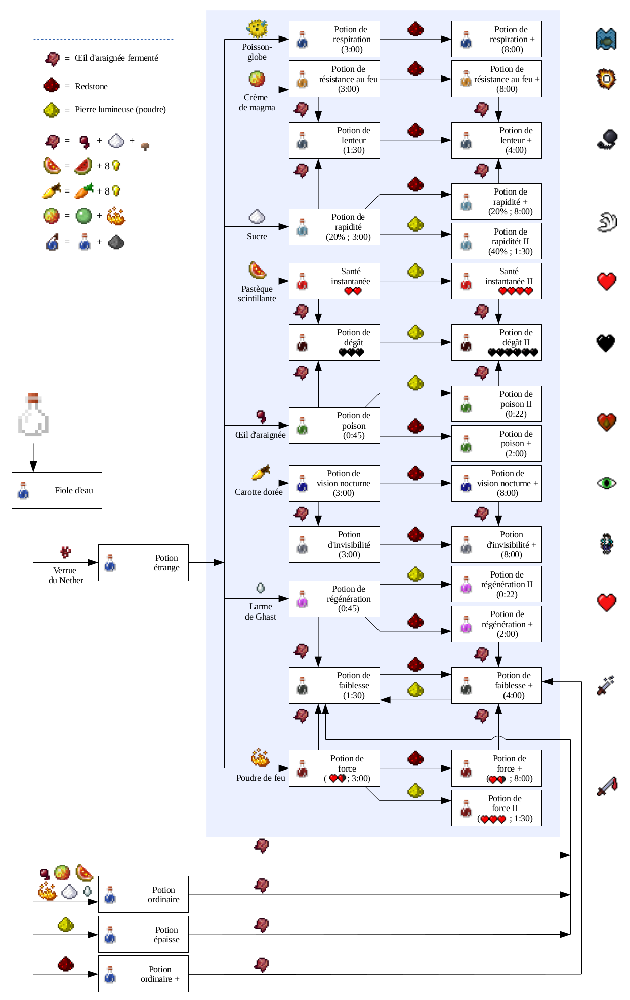

Dans Minecraft, l'alchimie permet de fabriquer des potions de toutes sortes, certaines avec des effets pour
améliorer vos compétences, d'autres utiles pour affaiblir tes adversaires
Avant de pouvoir fabriquer des potions, tu dois réunir plusieurs outils indispensables. Le premier d'entre eux
est l'alambic. Il se fabrique avec un baton de blaze et 3 roches noires (ou pierres des abimes). Tu peux aussi
en trouver dans des igloos ou dans l' église d'un village (Attention toutefois, tous les villages ne disposent
pas forcément d'églises!). On peut aussi en dénicher dans les navires de l'end, mais pour cela, il nécessite
d'avoir déjà vaincu l'Enderdragon pour avoir accès à la cité de l'end! Pour que l'alambic fonctionne, il faut
faire chauffer les fioles pour distiller les ingrédients. Pour cela, il faut utiliser de la poudre de blaze.
Cette dernière s'obtient en tranformant un baton de blaze (via l'établi). Un baton de blaze permet d'avoir deux
poudres de blaze. Une poudre de blaze permet de fabriquer environ 20 potions. Pour fabriquer des potions, il
faut des fioles, bien évidemment. Elles se fabriquent en assamblant 3 blocs de verre (qui se fabrique en faisant
chauffer du sable) une potion utilisée de redonnera une fiole vide. Lorsque vous mettez en place votre atelier
d'alchimiste, vous devez avoir une source d'eau à proximité, car tout commence avec la fiole d'eau, qui vous
permettera de fabriquer des potions étranges, base de tous types de potions. Pour obtenir une source d'eau, vous
pouvez placer un chaudron près de vous, mais la meilleure façon est de creuser trois trous et de verser de l'eau
à l'intérieur, car si vous utilisez un chaudron, l'eau diminuera au fur et à mesure, et nécessite 7 lingots de
fer.
Génération naturelle
Un chaudron vide est généré dans chaque cabane de sorcière. Dans la version Bedrock, le chaudron généré est
rempli avec une potion ou une potion jetable aléatoire.
Un chaudron rempli de 2/3 d'eau est généré dans chaque igloo avec un sous-sol.
Des chaudrons peuvent également se générer dans certaines salles des manoirs.
Des chaudrons se génèrent dans les tanneries des villages.
Eau
Pour remplir un chaudron avec de l'eau, il faut utiliser un seau d'eau sur le chaudron. Un chaudron se remplira
lentement s'il est placé sous la pluie. Un chaudron peut être rempli avec un seau d'eau dans le Nether.
Le chaudron peut être utilisé pour remplir des fioles (ce qui les transforme en fioles d'eau) ou des seaux, et
peut être rempli en utilisant une fiole d'eau sur le chaudron. Ils peuvent aussi servir à déteindre des armures
en cuir. Pour utiliser le chaudron, il faut utiliser une fiole vide ou une armure en cuir colorée sur le
chaudron. Le chaudron permet aussi d'effacer les motifs d'une bannière couche par couche.Vous pouvez placer un
spéléothème (dripstone) sous une source d’eau et au dessus d’un chaudron . Le chaudron se remplira et la source
d’eau reste intacte. Cela marche aussi avec la lave .
Le chaudron peut éteindre les créatures en feu (y compris les joueurs) qui rentrent dedans. À chaque utilisation
du chaudron, le niveau d'eau descend d'un cran. Après trois utilisations successives, il redevient vide et doit
être à nouveau rempli. Les zombies et squelettes exposés au soleil ne brûlent pas lorsqu'ils sont dans un
chaudron rempli d'eau, mais le niveau d'eau diminue peu à peu. Les Endermen ne prennent pas de dégâts de l'eau
lorsqu'ils sont dans un chaudron. Si une créature en feu entre dans un chaudron rempli avec de la neige,
celle-ci se transforme en eau, en éteignant ainsi la créature.
Voici le tableau des potions:
